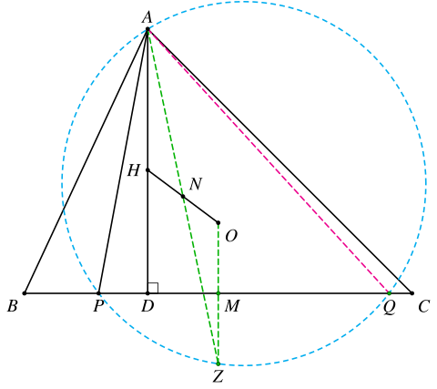
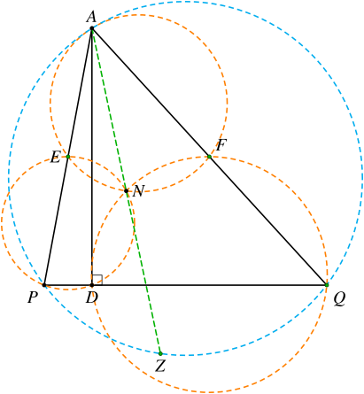
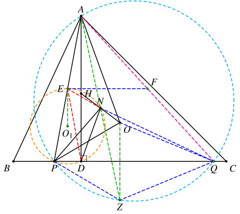

1. 题目
如图，在锐角三角形 ABC 中，AB<AC，AD 是 BC 边上的高，H 为垂心，O 为外心，N 为 HO 的中点，线段 BD 内一点 P 满足 ∠PND=2∠PAD。
证明：直线 BC 与三角形 AOP 的外接圆相切。
2. 分析
这个题虽然本身和Humpty点不直接相关，但是如果知道其性质，可以帮助我们找到思路。
首先，∠PND=2∠PAD 的条件比较好处理，直接取 AP 中点 E，显然 E、P、D、N 共圆。
接下来的问题是，如何处理中点 N，以及要如何证明结论。
我们先从结论出发。过点 A、O 且与直线 BC 相切的圆有两个，其中一个的切点为 P，我们设另一个的切点为 Q。显然，点 O 是 △APQ 的A-Humpty点。
关于Humpty点，除了前面的两篇文章1, 2里面介绍的性质之外，还有一个常用的性质：
设点 X 为 △ABC 的A-Humpty点。则
ABZC 为调和四边形 ⟺Z 和 X 关于 BC 对称

在本题中，我们作点 O 关于 BC 的对称点 Z，则 APZQ 为调和四边形。
同时，根据
AH=2OM⟹AH=OZ
可知 N 也是 AZ 的中点。
结合前面 E、P、D、N 共圆的条件，我们对称的取 AQ 中点 F，可以猜出右边 F、Q、D、N 也共圆，于是 A、E、N、F 共圆。

实际上，这个图本身又有一个调和四边形的结论：
在 △APQ 中，AD 为高，E、F 分别是 AP、AQ 中点，点 N 是 D、E、F 关于 △APQ 的密克点，点 Z 是 A 关于 N 的对称点，则 APZQ 为调和四边形。
证明就是简单的位似+倒角即可。
到这里，我们基本就找到了证明所需的路径：
EPDN 共圆 ⟹ 调和四边形 APZQ⟹ Humpty点 O
3. 解答
作 O 关于 BC 的对称点 Z，则
OZ=AH,OZ∥AH⟹平行四边形AHZO⟹N为AZ中点
设 △APZ 的外接圆与直线 BC 交于另一点 Q，分别取 AP 中点 E、AQ 中点 F，则 EF∥PQ，△NEF∼△ZPQ。

由 E 是 AP 中点可知 EA=ED=EP，故
∠PED=2∠PAD=∠PND
因此 E、P、D、N 共圆。设其圆心为 O1，则
ED=EP⟹EO1⊥PD⟹EO1⊥EF
可知 EF 为 ⊙O1 的切线，因此
∠ZPQ=∠NEF=∠APN
注意到 N 是 AZ 的中点，可知 APZQ 为调和四边形。故
∠OPQ∠OQP=∠ZPQ=∠APN=∠ZQP=∠AQN
因此 N 和 O 关于 △APQ 等角共轭，故
∠OAP=∠NAQ=∠ZPQ=∠OPQ
可知直线 BC 与三角形 AOP 的外接圆相切，结论成立。